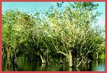

Al de literatuur heeft het over moerasslakken als enige voedingsbron en zo nu en dan worden ook schaaldieren genoemd. Gezien de biotoop waar deze hagedissen leven, zou je verwachten dat het geen voedselspecialisten zijn. Het is namelijk een zeer voedselrijke omgeving. Het zou mij niet verbazen als kaaimanteju´s helemaal niet zo kieskeurig zijn als altijd beweerd wordt en dat ze ook (water)-insecten en andere ongewervelde dieren verschalken als ze de kans krijgen. En het zou ook goed kunnen dat vissen, vogeltjes, eieren, amfibieën, reptielen, zoogdieren en aas op het menu staan. Zeker als je kijkt naar het voedselpakket van de andere vertegenwoordigers van de familie der Teiidae. Hiervoor ontbreekt echter het bewijs; er is nauwelijks onderzoek gedaan naar kaaimanteju´s. Het eten van moerasslakken gaat als volgt: de slak wordt met de platte maaltanden vermorzeld, waarna het vlees wordt doorgeslikt en het slakkenhuis wordt uitgespuugd. Ongetwijfeld zal er ook wel eens een stukje slakkenhuis mee naar binnen gaan, wat weer goed is voor de kalkhuishouding.
In Reptielenzoo Iguana werden meermaals slakken aangeboden, maar de hagedissen moesten niks van deze, in Nederland inheemse weekdieren hebben.
Deze zullen ongetwijfeld anders ruiken en smaken dan de Zuid-Amerikaanse moerasslakken. Wat ze wel willen eten in het terrarium zijn stukken kip (of ander vlees). Dit wordt uiteraard met een kalk-vitamine-mineralen-preparaat bestrooid. Het liefst eten ze echter eendagskuikens.